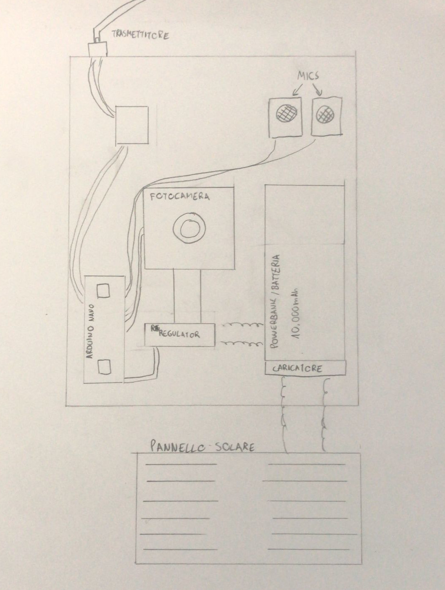

Sarà gestita da un raspberry
che controllerà una videocamera e un microfono.
I dati saranno poi mandati alla stazione
La stazione avrà le stesse funzionalià
della fototrappola, ma in più raccoglierà
le informazioni dalle altre fototrappole
e avrà un modulo sim per inviarle ad un server
dove poi saranno processate
Costruiremo un sito dove metteremo
tutti gli avvistamenti degli animali
che i dispositivi installati faranno
In questo modo tutti avranno la possibilità
di vedere la biodiversità dei vari luoghi
dove è presente un (Animal)izer
In futuro abbiamo pensato che (Animal)izer
potrebbe essere migliorato facendolo
diventare un rover autonomo che esegue
non solo il riconoscimento della fauna
ma anche quello della flora.
Un progetto ideato da: